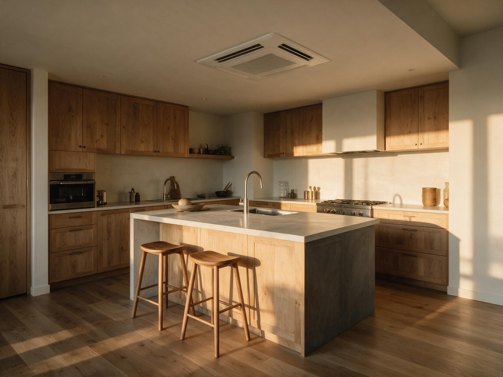

By the Editorial Team | Published: August 2026 | Last Updated: August 2026
The Compressor Class That Fits Most Homes But Gets Under-Recommended
Two-stage residential air-conditioning compressors run at approximately 65 percent of nameplate capacity most of the time and step up to 100 percent when the thermostat asks for more cooling during peak conditions. The design closes most of the humidity-control and cycling gap between single-stage and variable-speed at a fraction of the variable-speed price premium. It fits the majority of the U.S. residential market well, and it is under-recommended relative to how often it would be the correct pick over either alternative.
The under-recommendation is a market pattern, not a technology issue. Cost-sensitive installers default to single-stage; premium installers upsell to variable-speed; the middle option gets skipped for reasons that have more to do with sales incentives and stock availability than with fit. Understanding what two-stage actually does helps homeowners avoid being pushed to either end of the range when the middle would have been the right call.
How the Two-Speed Compressor Actually Works
Two-stage residential compressors are usually built on one of two mechanical platforms. Dual-scroll designs use two scroll compressor sets that can operate independently or together; running one scroll delivers roughly 65 percent capacity, running both delivers 100 percent. Two-cylinder reciprocating designs use a similar approach with two piston sets. In both cases the capacity change is discrete rather than continuous, and the compressor speed itself remains fixed at line frequency.
The thermostat and control board decide when to run the low stage versus the high stage. Standard logic runs the low stage on any cooling call, then escalates to the high stage if the low stage cannot bring indoor temperature down within a set time (typically 10 to 15 minutes). On a mild day, most cycles never escalate past low stage, which is where the humidity and cycling benefits come from.

What the Two-Stage Configuration Adds Beyond Single-Stage
- Longer runtime at lower capacity, which increases coil contact time and improves latent removal.
- Fewer cycles per hour on mild days (typically 2 to 4 versus 5 to 8 for single-stage).
- Reduced startup inrush events, which extends compressor life.
- Quieter typical operation because low-stage sound level is measurably lower than full stage.
- Full design capacity still available on peak days without oversizing the nominal tonnage.
Where Two-Stage Fits Best
Mixed climates (IECC Zones 3, 4, and 5) with average-quality envelopes are the natural home of two-stage equipment. In these regions, cooling season is long enough to justify the humidity benefit and the seasonal energy savings, but the peak load fraction is small enough that variable-speed's continuous modulation adds diminishing returns. Two-stage produces most of the comfort improvement of variable-speed at roughly 25 to 40 percent of the price premium.
Two-stage also fits the average retrofit market well. Most existing U.S. homes have envelopes and duct systems that do not fully justify variable-speed's higher first cost. A two-stage retrofit at replacement time captures the humidity and cycling improvements that homeowners notice on day one, without the control-system complexity or the higher parts costs that come with inverter drives.
Where Two-Stage Is Marginal or Wrong
Two conditions push the pick toward variable-speed instead. Hot-humid climates (IECC Zones 1A and 2A) where latent load fraction routinely reaches 30 to 40 percent benefit from continuous modulation more than from staged modulation, because low-stage runtime is still bounded and part-load hours dominate the season. High-performance homes with low envelope loads (ENERGY STAR-certified new construction or deep retrofits) often have design loads so low that even two-stage low-stage capacity exceeds the actual demand on typical days, which puts the equipment right back into short-cycling territory.
The other case pushing away from two-stage is toward single-stage on very small homes (under 1.5 tons total load) where the second stage would rarely engage and the extra cost of the two-stage compressor is hard to recover. Below about 24,000 Btu per hour of design load, the incremental benefit of two-stage over single-stage is small.
How Two-Stage Compares Across Attributes
| Attribute | Two-stage typical range | How it compares to single-stage | How it compares to variable-speed |
|---|---|---|---|
| Low-stage capacity | ~65 percent of nameplate | Single-stage has no low stage | Variable-speed goes as low as 25 percent |
| Cycles per hour (mild day) | 2 to 4 | Single-stage runs 5 to 8 | Variable-speed runs nearly continuously |
| SEER2 range | 15 to 18 | Single-stage typically 13 to 15 | Variable-speed typically 18 to 26 |
| First cost premium | Baseline single-stage plus 15 to 30 percent | 15 to 30 percent higher than single-stage | 15 to 40 percent lower than variable-speed |
| Thermostat requirement | Two-stage compatible (Y1 and Y2) | More capable than single-stage generic | Less demanding than variable-speed communicating |
| Indoor humidity control | Good; 50 to 55 percent RH typical | Meaningfully better than single-stage | Slightly worse than variable-speed's excellent |
Frequently Asked Questions
Is two-stage really that different from single-stage in daily operation?
Yes. Occupants notice the difference in three areas within the first cooling season: indoor humidity is lower and more stable (typically 50 to 55 percent versus 55 to 65 percent for single-stage), room-to-room temperature spread is narrower because longer low-stage runtimes distribute air more evenly, and startup sound events are less frequent because cycles per hour drop by roughly half. None of these show up on the SEER2 rating alone, which is why two-stage is often perceived as "just efficiency" when the real benefit is comfort quality.

Does two-stage equipment require a special thermostat?
Two-stage equipment requires a thermostat with a Y1 (low-stage) and Y2 (high-stage) call output, which is a standard capability on most mid-tier residential thermostats. It does not require a communicating or proprietary thermostat. Any two-stage-compatible thermostat from the mid-market ($100 to $250 range) works. Installing two-stage equipment with a single-stage-only thermostat degrades the system to on-off operation and defeats the reason to buy it.
How much of the price premium over single-stage does two-stage recover through energy savings?
The energy savings alone typically recover the price premium over single-stage in 5 to 8 years in mixed climates and 3 to 6 years in cooling-dominant climates. The stronger case is the comfort improvement, which is difficult to monetize but easy to notice. Most operators recommending two-stage make the comfort case first and the payback case second, because the comfort case is where the real value lies.
Does the low stage always engage first, or does the thermostat pick a stage?
Most residential two-stage control logic starts every cooling call on low stage and escalates to high stage only if low stage cannot satisfy the thermostat within a preset time window (typically 10 to 15 minutes). Some newer thermostats include "smart staging" logic that predicts stage need based on outdoor temperature and starts on high stage during peak-heat afternoons. Both approaches produce similar seasonal outcomes; the difference is in edge-case behavior.
Can two-stage equipment be paired with a variable-speed indoor blower?
Yes, and the pairing is standard on higher-tier two-stage equipment. The variable-speed (ECM) indoor blower slows during low-stage operation to match the reduced airflow requirement, which increases coil contact time and further improves latent removal. The combined package typically hits SEER2 17 to 18 with meaningfully better humidity control than any single-stage installation.
Why isn't two-stage the industry default recommendation?
Market dynamics rather than technology. Single-stage is cheaper for the installer to carry in inventory and easier to sell against a low competing bid. Variable-speed carries higher margins per unit and gets pushed by manufacturers as the premium tier. Two-stage sits between the two on both installer margin and manufacturer marketing spend, which leaves it under-promoted despite fitting the majority of the residential market well. Homeowners who ask specifically about two-stage often find it available at a small marginal cost over the default single-stage bid.
How does two-stage compare in service and reliability?
Two-stage equipment is mechanically more complex than single-stage (dual scrolls, staging valve, control board with escalation logic) and less complex than variable-speed (no inverter drive, no communicating controls). Service life is typically 12 to 17 years, comparable to good single-stage installations. Common failure modes are similar to single-stage; the staging mechanism itself is well-proven and rarely the failure point.
Does two-stage make sense in cold-climate heating loads?
For heat pumps in cold-climate applications, two-stage still helps but variable-speed's advantage grows because heating capacity depends heavily on outdoor temperature and continuous modulation matches variable heating loads better. Two-stage cold-climate heat pumps exist and work; variable-speed cold-climate heat pumps outperform them meaningfully in the coldest months. The residential cooling calculus is different from cold-climate heating.
